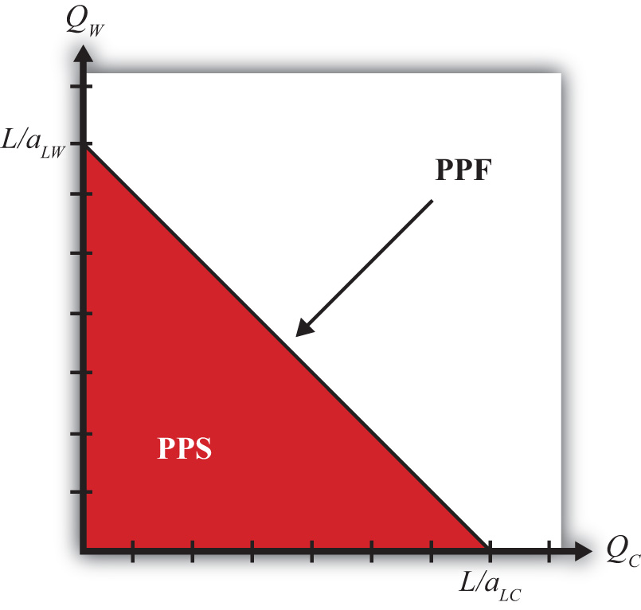

Using the two production functions and the labor constraint, we can describe the production possibility frontier (PPF)The set of all output combinations that could be produced in a country when all the labor inputs are fully employed. In the Ricardian model, the PPF is linear.. First, note that the production functions can be rewritten as LC = aLC QC and LW = aLW QW. Plugging these values for LC and LW into the labor constraint yields the equation for the PPF:
aLC QC + aLW QW = L.This equation has three exogenous variables (aLC, aLW, and L) that we assume have known values and two endogenous variables (QC and QW) whose values must be solved for. The PPF equation is a linear equation—that is, it describes a line. With some algebraic manipulation, we can rewrite the PPF equation into the standard form for an equation of a line, generally written as y = mx + b, where y is the variable on the vertical axis, x is the variable on the horizontal axis, m is the slope of the line, and b is the y-intercept. The PPF equation can be rewritten as
We plot the PPF on the diagram in Figure 2.1 "Production Possibilities" with QC on the horizontal axis and QW on the vertical axis. The equation is easily plotted by following three steps.
Figure 2.1 Production Possibilities
The straight downward-sloping line is the production possibility frontier. It describes all possible quantity combinations of wine and cheese that can be achieved by the U.S. economy. A movement along the curve represents a transfer of labor resources out of one industry and into another such that all labor remains employed.
Points inside the PPF are production possibilities but correspond to underemployment of labor resources. In fact, all production possibilities regardless of whether full employment is fulfilled are referred to as the production possibility set (PPS). The PPS is represented by all the points within and on the border of the red triangle in Figure 2.1 "Production Possibilities".
Jeopardy Questions. As in the popular television game show, you are given an answer to a question and you must respond with the question. For example, if the answer is “a tax on imports,” then the correct question is “What is a tariff?”